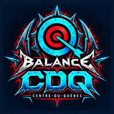

CDQ Étalonnage
Choisis ton appareil.
Application Android
Télécharger pour AndroidOuvre le fichier téléchargé, puis choisis Installer ou Mettre à jour.
Pour ce téléphone, utilise le bouton iPhone ci-dessous.
Application iPhone
Installer sur iPhoneDans Safari : Partager → Sur l’écran d’accueil → Ajouter.
Aide à l’installation
Application PC
Installer sur PCDans Chrome ou Edge, ouvre l’application puis clique sur l’icône Installer dans la barre d’adresse.